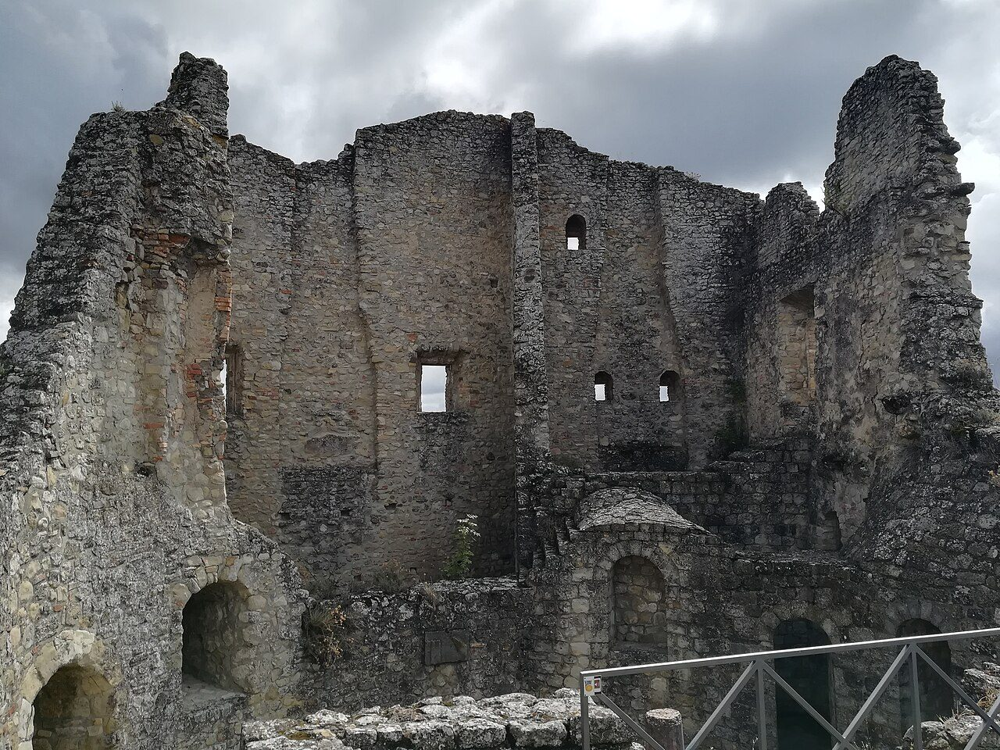
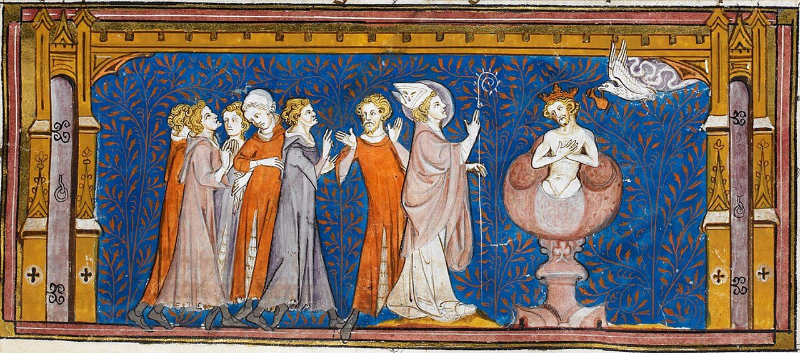
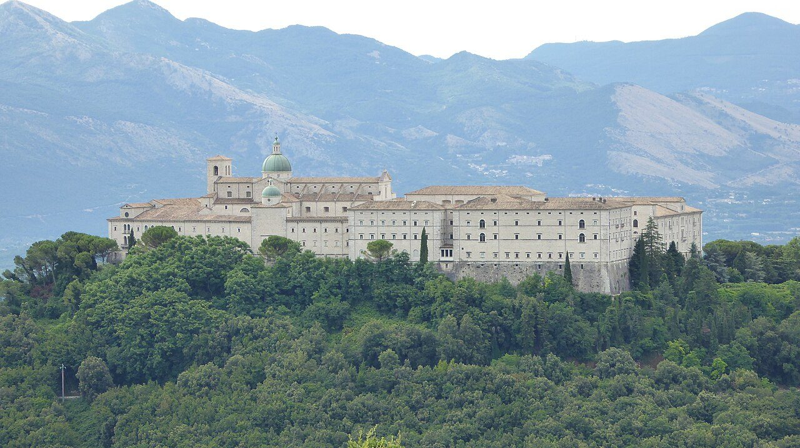
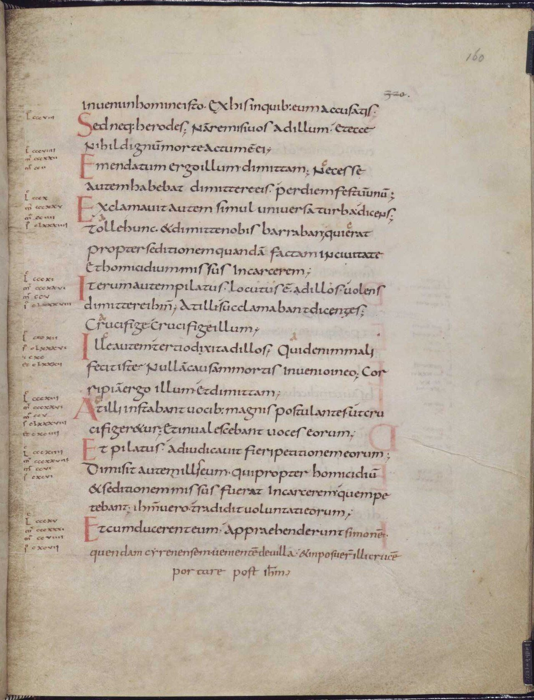
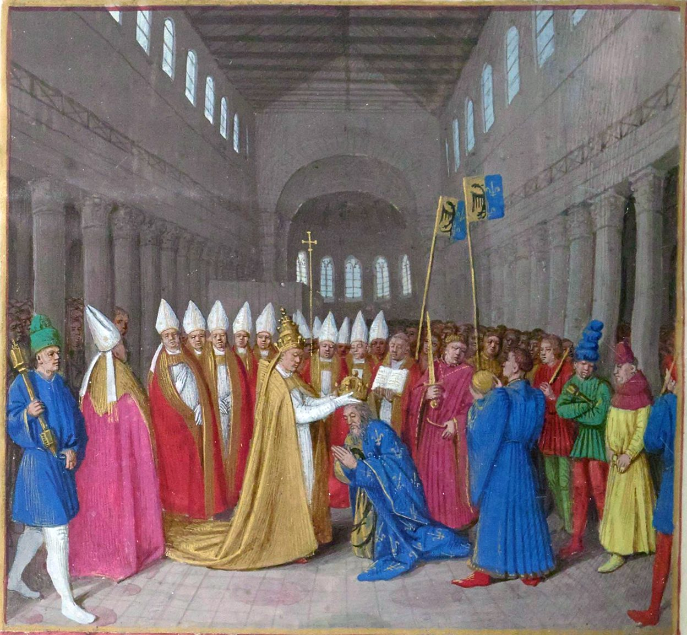
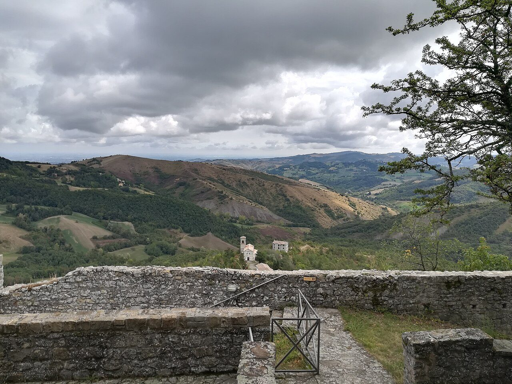
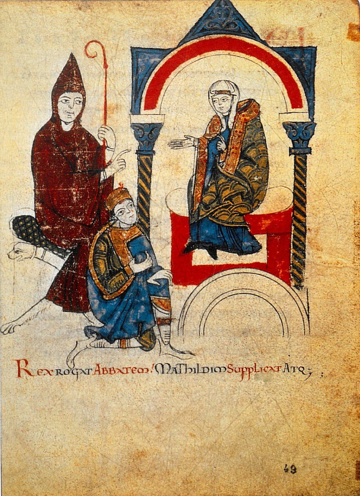

歴史・地理 History & Geography中世ヨーロッパでは、 なぜ 王より 教会が 強かった？ 1077年1月、北イタリアの城の門の前で、ドイツの王が3日間、大きな軍を持たない教皇に許しを請いました。剣を持つ王は、なぜ頭を下げたのでしょう。教会が持っていたものと王の弱みを、地図と図で並べてみませんか。
2026.11.10 UP 約8分で読める 文：SOMOSOMO編集部
写真：カノッサ城の跡／SIG SG 510（2018年、CC0）
Previously
前回は、唐の都・長安の話でした。人口100万ともいわれる大都市に、ソグド人の商人や国を失ったペルシアの王族、日本からの遣唐使などが集まりました。けれども755年の安史の乱から唐は衰え、907年に滅びます。今回は、話を西のヨーロッパへ戻します。
北イタリアの山の上の城、カノッサ。1077年1月25日、その門の前に、ドイツの王ハインリヒ4世がたどり着きました。26歳で、のちに皇帝となる人です。真冬のアルプスを越えてきました。
王は、修道士が着る粗い毛の服を身につけ、はだしで門の外に立ったと伝えられます。食べるものも断って、3日間待ったといいます。城の中にいたのは、ローマの教皇グレゴリウス7世。王を教会から締め出す「破門」を言い渡した人です。のちに「カノッサの屈辱」と呼ばれる場面です。
教皇は、王のような大きな軍を率いてはいません。それなのに、兵を従える王のほうが、雪の中で頭を下げました。中世のヨーロッパでは、なぜ王より教会のほうが強かったのでしょうか 。答えを探しに、600年ほど前、西のローマ帝国が消えたころへさかのぼります。
In a word
王が家来の誓いに頼るなか、教会は税と文字と破門 を握っていたから。
01
The Alliance
ゲルマン人の 王たちは、 ローマの教会と 手を組んだ
第12話で見たように、西のローマ帝国では476年に最後の皇帝が退きました。西の土地には、ゲルマン系の人々の王国がいくつも並びます。そのひとつ、フランク人の王クローヴィスは、486年から各地を攻め取り、ガリア（いまのフランス）の大部分をまとめました。
新しい王国を治めるには、昔から住むローマ系の人々を味方につける必要がありました。その人々をまとめていたのが、町ごとにいる司教（その地域の教会のまとめ役）です。クローヴィスは、聖職者の助けなしにはガリアを治められないと考え、ローマの教会と同じ教え（のちのカトリック）を信じる妻を迎えたといわれます。
やがてクローヴィスは、クリスマスの日に、ランスの町で洗礼（信者になる儀式）を受けました。年は498〜506年のどこかとみられます。ほかのゲルマン人の王の多くは、同じキリスト教でも「アリウス派」という別の教えをとっていました。ローマ系の人々や司教と同じ教えを選んだことが、フランク王国の強みになります。

洗礼を受けるクローヴィス 14世紀の『フランス年代記』の写本に描かれた場面です。右の器の中に冠をかぶった王が入り、中央には杖を持つ司教、上からは白い鳩が描かれています。写真：Baptism of Clovis, from Chroniques de France ou de St Denis ／作者不明（14世紀、パブリックドメイン）
西の教会のまとめ役は、ローマの司教でした。イエスの弟子ペトロの後継ぎとされ、のちに「教皇」と呼ばれる人です。皇帝のいないローマで、教皇は町の世話役にもなります。
590年に教皇になったグレゴリウス1世は、各地にある教会の農園から穀物などをローマに運ばせ、町の人々に配っています。遠いブリテン島にも修道士を送り、教皇は軍を持たないまま、手紙と人の行き来で西ヨーロッパの教会をつないでいきました 。
02
Monks and Letters
文字と知識は、 修道院の中に 残った
同じ6世紀、ローマの南東の山の上で、もうひとつの流れが始まっていました。529年ごろ、修道士ベネディクトゥスが、モンテ・カッシーノに修道院を開きます。修道院は、神に仕えるために結婚せず、共同で暮らす修道士たちの家です。
ベネディクトゥスは530年ごろ、修道院の暮らしの決まり（戒律）を書きました。祈りと手仕事を軸にした、のちに「祈り、働け」という言葉でまとめられる暮らしです。食事のあいだは1人が本を読み上げ、夕方にも本を読む時間がありました。修道院には、読み書きのできる人と本が欠かせませんでした。

山の上の修道院 ベネディクトゥスが修道院を開いた、モンテ・カッシーノの山の上の修道院です。いまの建物は、1944年に第二次世界大戦の爆撃で壊されたあと、建て直されたものです。写真：Monte Cassino Abbey 2019 02 ／DonGatley（2019年、CC0）
ローマ帝国が消えたあとの西ヨーロッパでは、ラテン語（ローマの言葉）の読み書きのできる人が減っていきました。8世紀には、聖職者（司教や修道士など、教会に仕える人）の中にさえ、読み書きの苦手な人がいたほどです。文字の世界は、教会と修道院の中に細く残りました。
その文字に力を入れたのが、768年にフランク王国の王となったカール（のちのカール大帝）です。カールは教会や修道院に学校を開かせ、古い本を書き写させました。字の形もそろえられ、大文字と小文字を分けた読みやすい書体が生まれます。いまの欧文の小文字につながる書体です。

そろえられた小文字 カロリング小文字体（カールの家の名からとった呼び名）で書かれた福音書（イエスの生涯を記した書）の写本の1ページです。丸くて区切りのはっきりした小文字と、行の頭の赤い大文字に注目してください。写真：Minuscule caroline ／作者不明（9世紀ごろ、パブリックドメイン）
ところが、カール本人は字を書くのが苦手だったようです。側近エインハルトの伝記には、書く練習を始めたのは晩年だった、とあります。ふだんは文書を読み上げさせ、返事や命令は口で伝えて書かせていました。当時は、字の読める王でもそうするのがふつうでした。王の言葉を文字にして残すのは、聖職者の仕事でした 。
03
The Crown
皇帝の冠は、 教皇の手から 授けられた
カールの家は、もとは王の家ではありません。クローヴィスの家の王たちは力を失い、実権は宮宰（宮廷の長官）をつとめるカールの家に移っていました。第13話に出てきた、732年にイスラム教徒の軍を破ったカール・マルテルは、カール大帝の祖父です。その子ピピンは751年、教皇の支持を得て、自ら王になりました。
754年には、教皇ステファヌス2世がアルプスを越えてフランク王国を訪れ、パリ近くのサン・ドニの教会で、ピピンと息子たちに、あらためて油を注ぎました。油を注ぐのは、神に選ばれた王であることを示す儀式です。王の位に、教会のお墨付きが加わりました。
見返りに、ピピンはイタリアへ兵を出し、ローマに迫っていたランゴバルド人（ゲルマン系の人々）から奪い返した中部イタリアの町々を、756年に教皇に贈りました。「ピピンの寄進」と呼ばれ、ここから教皇が治める国（教皇領）が育っていきます。
王を継いだカールは、王国を大きく広げました。そして800年のクリスマス、ローマのサン・ピエトロ大聖堂で、教皇レオ3世がカールに冠をかぶせ、「ローマ人の皇帝」と呼びます。西で皇帝が立てられなくなってから、300年あまりぶりの皇帝でした 。

冠を授ける教皇 1455〜1460年ごろにジャン・フーケが『フランス大年代記』の写本に描いた、800年の戴冠の場面です。650年ほどのちの絵です。教皇が上に立ち、ひざまずくカールに冠をのせています。写真：Sacre de Charlemagne ／ジャン・フーケ（1455〜1460年ごろ、パブリックドメイン）
Fig.01 814年ごろの フランク王国と、 この話の舞台
フランク王国
地中海
北海
アルプス山脈
ローマ（教皇）
アーヘン
カノッサ
ランス
クリュニー
モンテ・カッシーノ
ヴォルムス
モン・スニ峠
この話の主な舞台
修道院
そのほかの町
フランク王国のおおよその境（814年ごろ）
見どころは、カールの都アーヘンと教皇のいるローマが、アルプスをはさんで遠く離れていること。冠を受けるにも、許しを請うにも、王はこの山を越えなければなりませんでした。境と町の位置はおおよそです。地図は Natural Earth（パブリックドメイン）から作りました。
ただ、この大きな国は長く続きませんでした。フランク人には、王国を息子たちで分ける習わしがあります。カールの孫の代の843年、ヴェルダン条約で王国は3つに分かれました。東の部分はのちのドイツ王国に、西の部分はのちのフランス王国になっていきます。
やがてドイツの王たちは、ローマで教皇から冠を受けて皇帝を名のるようになります（962年のオットー1世から）。
9世紀の王国には、騎士を養うだけの役所のしくみがなかった、と説明されます。王は家来に土地を与え、かわりに戦いや務めを誓わせます。家来はさらに自分の家来に土地を分けました。のちに封建制と呼ばれるこの結びつきでは、王の力は、家来たちが誓いを守るかどうかにかかっていました 。
04
Excommunication
破門は、 王から 家来の誓いを 奪った
王国は分かれても、西ヨーロッパの教会は、ローマの教皇のもとでひとつでした。779年、カールは王国じゅうの人に、収穫などの10分の1を教会に納める「10分の1税」を義務づけています。教会や修道院には、王や貴族から寄進された土地も集まりました。
910年には、ブルゴーニュ（いまのフランス東部）のクリュニーに、土地の貴族にも司教にも従わず、教皇だけに属する修道院ができます。クリュニーはやがて、ほかの修道院を改める権利を教皇から得て、西ヨーロッパに修道院の網を広げました。
王は、この教会の力を借りて国を治めていました。結婚しないので位や土地を子に継がせない司教を、ドイツの王たちは役人として頼りました。司教や修道院長は王が自分で選び、土地と一緒に位を与えます。これを叙任といいます。
1046年には、ハインリヒ4世の父が、争っていた3人の教皇を退けて新しい教皇を立てたほどでした。11世紀の半ばまで、教会は王に支えられ、王に選ばれる側でもあったのです。
Fig.02 教会が 持っていたものと、 王の弱み
教会が持っていたもの
王の弱み
土地と10分の1税
寄進された土地と、
収穫の10分の1が入る
土地と引きかえの兵
土地を分け与えて、
かわりに戦ってもらう
文字と記録
読み書きのできる人の
多くが聖職者
役人は聖職者頼み
文書も役所の仕事も、
聖職者に頼る
国をこえた組織
教皇の下に、司教と
修道院がつながる
分けられる王国
息子たちで分けて、
843年に3つに
破門
教会から締め出し、
家来の誓いを解く
誓いだけの忠誠
誓いが解ければ、
家来は離れていく
見どころは、同じ段の左右が組になっていること。王の弱いところを、教会の持ちものがちょうど押さえています。図は本文の内容をまとめたものです。
クリュニーから広がった、教会を王や貴族の手から離そうという改革の流れは、やがてローマにも届いたといわれます。1073年に教皇になったグレゴリウス7世は、この形を改めようとしました。
司教を選ぶのは教会だと考える教皇と、昔からの王の権利だとするハインリヒ4世がぶつかります。のちに「叙任権闘争」と呼ばれる争いの始まりです。
1076年1月、ハインリヒはドイツのヴォルムスに司教たちを集め、教皇に退位を求めました。教皇は2月22日、王を破門し、王の位を取り上げると宣言します。さらに、王の家来たちが立てた誓いを、解くと言い渡しました。
Fig.03 破門が 王を 追いつめるまで
1076年2月 教皇が王を破門 王の位を取り上げ、家来の誓いを解く 1076年10月 有力な貴族（諸侯）が期限を切る 1年以内に破門が解けなければ、王と認めない 1076〜77年の冬 王がアルプスを越える 道をふさがれ、遠回りして峠を越える 1077年1月 カノッサで許しを請う 3日待ち、28日に門が開く
見どころは、王を動かしたのが教皇の兵ではなく、王の家来たちだったこと。年月は出典に挙げた各記事によります。
これが、王にいちばんこたえました。破門された人は、教会の儀式から締め出されます。当時は、救いの道を閉ざされることだと受け止められました。
王に不満を持つ諸侯（各地を治める有力な貴族）にとっては、王に従わない口実になりました。10月、諸侯は集まって、1年以内に破門が解けなければハインリヒを王と認めない、と誓います。

カノッサ城の跡から見わたす丘 北イタリアのアペニン山脈の中にある、カノッサ城の跡からの眺めです。城は1256年に壊され、いまは石垣や壁の一部が残っています。写真：Castello di Canossa 51 ／SIG SG 510（2018年、CC0）
だからハインリヒは、真冬のアルプスを越えました。南ドイツの貴族が峠への道をふさいだため、遠回りして、いまのフランスとイタリアの境のモン・スニ峠を越えます。教皇は、トスカーナ女伯（北・中部イタリアの広い土地を治める女性の領主）マティルダの客として、カノッサ城にいました。
3日待ったあとの1月28日、ついに門が開きます。王はひざまずいて許しを請い、教皇は王を教会に戻しました。その夜、教皇と王とマティルダは、城の礼拝堂で、ともに聖体（キリストの体とされるパン）を受けます。破門は解けました。

ひざまずく王 1115年ごろの写本『マティルダ伝』の絵です。中央でひざまずくのがハインリヒ4世、左は王の名付け親だったクリュニー修道院長フーゴ、右がマティルダ。下の文は、王が修道院長に頼み、マティルダに願い出る、という意味です。写真：Mathilde und Hugo von Cluny als Fürsprecher Heinrichs IV. ／ドニゾ『マティルダ伝』より（1115年ごろ、パブリックドメイン）
こうしてみると、教会の強さは、信仰の中身だけでは説明しきれません。教会には、10分の1税と土地というお金がありました。文字と記録がありました。国をこえた組織があり、王の家来の誓いを揺さぶる破門がありました。王の力が家来の誓いの上に立っていたからこそ、破門は剣より強く効いた のです。
05
By the Numbers
数字で見る 中世の教会
7,000超 800年からの100年に書かれ、いまに残るラテン語の写本の点数800年より前のものは2,000点に満たない。Carolingian Renaissance（Wikipedia）による
27か条 教皇の力を書き並べた文書「教皇令（ディクタトゥス・パパエ）」の条の数。皇帝を退けてよい、とする条もある1075年の記録にある。Dictatus papae（Wikipedia）による
1,500年 ベネディクトゥスの戒律が使われてきた長さ（およそ）。いまも修道院の決まりになっている530年ごろに書かれた。Rule of Saint Benedict（Wikipedia）による
Here's the Fun Part
ここが面白い！カノッサのあと、 勝ち残ったのは 王だった
カノッサの場面は、教皇の勝ちに見えます。けれども、破門が解けたことで、王は再び自由に動けるようになりました。屈辱的な敗北だったのか、それとも見事な一手だったのか。当時の記録でも、いまの歴史家のあいだでも、見方が分かれています。
その後、ドイツの諸侯は別の王ルドルフを立て、ハインリヒは内戦を戦い抜きました。1080年、教皇はもう一度王を破門しますが、王の側は自分たちの教皇クレメンス3世を立てて対抗します。そして1084年、ハインリヒはローマに攻め入り、自分の立てた教皇から皇帝の冠を受けました 。
教皇を助けに来たノルマン人の軍がローマを荒らし、教皇は町にいられなくなりました。グレゴリウス7世は翌1085年、南イタリアのサレルノで亡くなります。
墓には、正義を愛し不正を憎んだから、追われた地で死ぬ、という意味の言葉が刻まれています。この争いに限れば、勝ち残ったのは王のほうでした。教会の強さは、人々が破門と誓いを重く見るかぎりの強さでした。
いまもドイツ語などには「カノッサへ行く」という言い回しがあり、しぶしぶ頭を下げることを指します。誰かが不本意な謝罪に出向くニュースを見たら、雪の門の前で3日待った王のことを思い出してみてください。
To be continued
王と教皇が争っていたころ、ユーラシアの東では、960年に始まった宋という王朝が中国を治めていました。紙のお金や、方角を知る羅針盤は、この宋の時代に生まれたといわれます。なぜ、宋の中国だったのでしょうか。
出典・参考
Road to Canossa （Wikipedia 英語版）：1077年1月25日にカノッサに着いたこと、妻ベルタと幼い息子コンラートと真冬のアルプスを越えたこと、南ドイツ（シュヴァーベン）の貴族が峠への道をふさぎ、モン・スニ峠を越えたこと、修道士の粗い毛の服・はだし・断食で3日待ったと伝えられること、1月28日に門が開き、その夜に城の礼拝堂でともに聖体を受けたこと、1076年1月のヴォルムスの会議、10月のトレブルでの諸侯の誓い、屈辱か見事な一手かで見方が分かれること、その後の対立王ルドルフとの内戦、2度目の破門、王がローマに攻め入りクレメンス3世を立てたこと、「カノッサへ行く」という言い回しHenry IV, Holy Roman Emperor （Wikipedia 英語版）：1050年11月11日の生まれ、1084年にクレメンス3世から皇帝の冠を受けたこと、名付け親がクリュニー修道院長フーゴだったこと、1080年の2度目の破門Pope Gregory VII （Wikipedia 英語版）：1073年の就任、1076年2月22日の破門と家来の誓いを解いたこと、1085年5月25日にサレルノで亡くなったこと、墓の言葉Investiture Controversy （Wikipedia 英語版）：叙任の意味、位を子に継がせない司教を皇帝が政治に頼ったこと、司教が帝国の諸侯として広い土地を治めたことDictatus papae （Wikipedia 英語版）：1075年の記録にある27か条、皇帝を退けてよいとする条（数字の欄）Synod of Sutri （Wikipedia 英語版）：1046年、ハインリヒ3世が3人の教皇を退けたことCanossa ・Matilda of Tuscany （Wikipedia 英語版）：アペニン山脈の城、1256年に壊されたこと、マティルダが教皇を城に迎えたことClovis I ・Francia （Wikipedia 英語版）：486年からの征服、聖職者の助けを求めてカトリックの妻を迎えたこと、クリスマスの洗礼とその年に498〜506年の説があること、ランス、ほかのゲルマン人の多くがアリウス派だったこと、王国を息子たちで分ける習わしPope Gregory I ・Augustine of Canterbury （Wikipedia 英語版）：590年の就任、シチリアなどの教会の農園から穀物・ワイン・油などをローマに運ばせ配ったこと、ブリテン島への修道士の派遣と597年のケント到着Rule of Saint Benedict ・Monte Cassino （Wikipedia 英語版）：529年ごろの修道院、530年ごろの戒律、「祈り、働け」、食事中と夜の読書の決まり、15世紀（約1,500年）にわたって使われてきたこと（数字の欄）、1944年の爆撃と戦後の再建Carolingian Renaissance （Wikipedia 英語版）：8世紀にラテン語の読み書きのできる書記が足りず、聖職者にも読み書きの苦手な人がいたこと、学校と写本、カロリング小文字体、800年より前と後の写本の数（数字の欄）Charlemagne （Wikipedia 英語版）：768年の即位、800年のクリスマスにサン・ピエトロ大聖堂でレオ3世から冠を受け「ローマ人の皇帝」と呼ばれたこと、書く練習を晩年に始めたこと、文書を読み上げさせ口で伝えたことPepin the Short ・Donation of Pepin （Wikipedia 英語版）：宮宰の家、751年に教皇ザカリアスの支持で王になったこと、754年にサン・ドニでステファヌス2世がピピンと息子たちに油を注いだこと、751年のランゴバルド王によるラヴェンナの攻略、756年の寄進Treaty of Verdun ・Feudalism （Wikipedia 英語版）：843年に3つに分かれたこと、東と西がのちのドイツ王国とフランス王国になったこと、9世紀のカロリング朝に騎士を養う役所のしくみがなく土地を与えたこと、主君・家来・封土の関係Capitulary of Herstal ・Tithe （Wikipedia 英語版）：779年に10分の1税がフランク王国じゅうで義務になったこと、10分の1税の意味Cluny Abbey （Wikipedia 英語版）：910年の創建、土地の貴族にも司教にも従わず教皇だけに属したこと、931年にほかの修道院を改める権利を得たこと、修道院の網Excommunication （Wikipedia 英語版）：破門で教会の儀式（秘跡）から締め出されること地図（Fig.01）：Natural Earth （パブリックドメイン）の海岸線から作成。814年ごろのフランク王国の境と町の位置はおおよそ
写真：CC0 またはパブリックドメイン。扉はカノッサ城の跡（Castello di Canossa 88 ／SIG SG 510、2018年、CC0）。本文中の写真のクレジットは、それぞれの写真の下に記しています